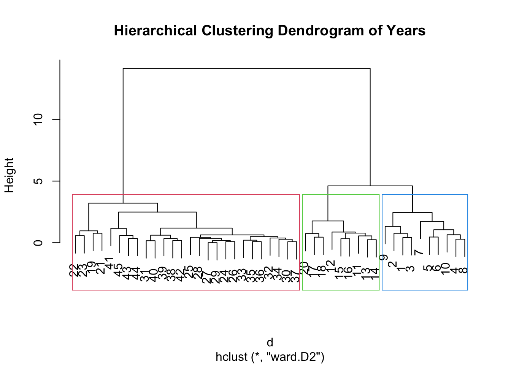

pacman::p_load(tidyverse, corrplot, knitr, patchwork)
analysis_df <- readRDS("data/analysis_df.rds")
tfr_df <- readRDS("data/tfr_df.rds")
asfr_df <- readRDS("data/asfr_df.rds")
series_key <- readRDS("data/series_key.rds")Correlation Analysis: Singapore Fertility Trends: A Visual Analytics Study
load dataset
Correlation Analysis
This section presents on correlation-based analysis and related association checks. In particular, this examine how total fertility rate (TFR) is associated with marriage and divorce indicators, and whether these relationships remain stable when trends, timing differences, and time variation are taken into account.
The correlation component is designed to support the planned Shiny application, where users will be able to interactively explore the strength, direction, and stability of these relationships. This helps complement the descriptive visualisations by providing a more structured analytical layer for understanding how fertility patterns move alongside marriage and divorce indicators over time.
Note1.1: Correlation in Levels and First Differences

| Pair | Correlation in Levels | Correlation in First Differences |
|---|---|---|
| TFR vs Marriage | 0.878 | 0.430 |
| TFR vs Divorce | -0.771 | -0.047 |
| Marriage vs Divorce | -0.884 | 0.000 |
# correlation matrix in levels
cor_levels <- analysis_df %>%
select(tfr, marriage, divorce) %>%
cor(use = "complete.obs")
# clustered correlation plot
corrplot::corrplot(
cor_levels,
method = "ellipse",
tl.col = "black",
order = "hclust",
hclust.method = "ward.D2",
addrect = 3
)
# create first differences
diff_df <- analysis_df %>%
arrange(year) %>%
mutate(
dtfr = tfr - lag(tfr),
dmarriage = marriage - lag(marriage),
ddivorce = divorce - lag(divorce)
) %>%
drop_na()
# correlation matrix in first differences
cor_diff <- diff_df %>%
select(dtfr, dmarriage, ddivorce) %>%
cor(use = "complete.obs")
# comparison table
out_tbl <- data.frame(
Pair = c("TFR vs Marriage", "TFR vs Divorce", "Marriage vs Divorce"),
`Correlation in Levels` = c(
cor_levels["tfr", "marriage"],
cor_levels["tfr", "divorce"],
cor_levels["marriage", "divorce"]
),
`Correlation in First Differences` = c(
cor_diff["dtfr", "dmarriage"],
cor_diff["dtfr", "ddivorce"],
cor_diff["dmarriage", "ddivorce"]
),
check.names = FALSE
)
knitr::kable(
out_tbl,
digits = 3,
caption = "Comparison of correlations in levels and first differences"
)Observation:
The clustered correlation plot shows that TFR is positively associated with marriage and negatively associated with divorce, while marriage and divorce are also strongly negatively related to each other. However, the first-difference results show that these relationships are not equally robust after removing long-run trend effects. In particular, the TFR–divorce correlation weakens substantially after differencing, suggesting that its strong negative relationship in levels is largely trend-driven. By contrast, the TFR–marriage correlation remains moderately positive after differencing, indicating that some association is still present in year-to-year changes.
Note1.2: Rolling Correlation with TFR

win <- 10
roll_df <- analysis_df %>%
select(year, tfr, marriage, divorce) %>%
drop_na() %>%
arrange(year)
n <- nrow(roll_df)
years_end <- roll_df$year[win:n]
cor_mar <- numeric(length(years_end))
cor_div <- numeric(length(years_end))
for (i in win:n) {
idx <- (i - win + 1):i
cor_mar[i - win + 1] <- cor(roll_df$tfr[idx], roll_df$marriage[idx], use = "complete.obs")
cor_div[i - win + 1] <- cor(roll_df$tfr[idx], roll_df$divorce[idx], use = "complete.obs")
}
roll_out <- data.frame(
year = years_end,
`TFR vs Marriage` = cor_mar,
`TFR vs Divorce` = cor_div,
check.names = FALSE
) %>%
pivot_longer(
cols = c(`TFR vs Marriage`, `TFR vs Divorce`),
names_to = "series",
values_to = "correlation"
)
ggplot(roll_out, aes(x = year, y = correlation, colour = series)) +
geom_line(linewidth = 1) +
geom_hline(yintercept = 0, linetype = 2) +
labs(
title = paste("Rolling Correlation with TFR (Window =", win, "years)"),
x = "Year",
y = "Correlation",
colour = NULL
) +
theme_minimal() +
theme(
plot.title = element_text(face = "bold")
)Observation:
The rolling correlations show that the association between TFR and marriage remains mostly positive across time, suggesting a relatively stable positive relationship over the long run. In contrast, the correlation between TFR and divorce varies substantially across periods, becoming strongly negative in some windows and positive in others. This indicates that marriage is a more consistent associated indicator of fertility in the dataset, while the relationship with divorce is less stable over time.
Note1.3 Hierarchical Clustering of Years by TFR, Marriage and Divorce

# prepare data for clustering
cluster_df <- analysis_df %>%
select(year, tfr, marriage, divorce) %>%
drop_na() %>%
arrange(year)
# standardise variables
cluster_mat <- cluster_df %>%
select(tfr, marriage, divorce) %>%
scale()
# hierarchical clustering
d <- dist(cluster_mat, method = "euclidean")
hc <- hclust(d, method = "ward.D2")
# dendrogram
plot(hc, main = "Hierarchical Clustering Dendrogram of Years")
rect.hclust(hc, k = 3, border = 2:4)Observation:
Hierarchical clustering groups years according to similar combinations of TFR, marriage and divorce. The dendrogram indicates that the years can be divided into three broad clusters, suggesting that Singapore’s demographic patterns evolved across a few distinct phases over time.